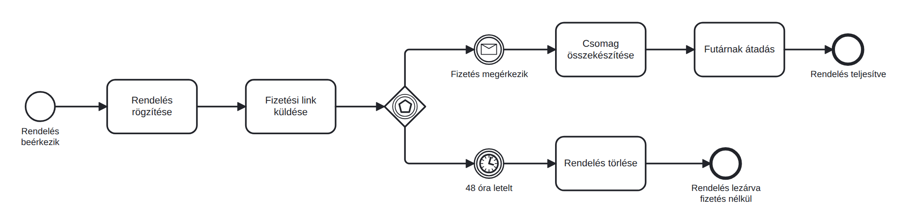

Webshop: várakozás és időkorlát modellezése
Üzenet- és időzítő események, valamint eseményalapú kapu használata olyan helyzetekben, amikor a folyamat attól függően halad tovább, hogy egy esemény bekövetkezik-e a megadott időn belül.
- használtál időzítő (timer) és üzenet (message) köztes eseményt;
- ismered az eseményalapú kaput: az elsőként bekövetkező esemény ágán folytatódik a folyamat;
- láttad, milyen egy kidolgozott webshop-modell, és bővítettél egy egyszerűt.
Új helyzet: várakozás és időkorlát a folyamatban
A kávézós modellben elsősorban a tevékenységek sorrendjét követtük. A webshop példájában viszont már a várakozás is a folyamat része: a rendelés rögzítése és a fizetési link elküldése után fizetési visszajelzésre várunk. Ha a visszajelzés 48 órán belül megérkezik, a rendelés feldolgozása folytatódik; ha nem, a rendelést töröljük. Az eseményalapú kapu után ezért két esemény következik: egy üzenetfogadó és egy időzítő köztes esemény. A folyamat azon az ágon halad tovább, amelyik esemény előbb bekövetkezik.
- Új diagram a bpmn.io-ban: Rendelés beérkezik (kezdő esemény) → Rendelés rögzítése → Fizetési link küldése.
- Tedd le az eseményalapú kaput: húzz be egy kaput, kattints rá, és a csavarkulcs ikonnal váltsd át Event based gateway típusra (rombusz, benne ötszög).
- Első ág: köztes üzenet esemény (kör, benne boríték): Fizetés megérkezik; utána Csomag összekészítése → Futárnak átadás → Rendelés teljesítve (záró).
- Második ág: köztes, fogadó időzítő esemény (kettős kör, órajel): 48 óra letelt → Rendelés törlése → Rendelés lezárva fizetés nélkül.
- Mentsd le webshop_egyszeru.bpmn néven.

A kapud rombuszában ötszög van (nem X), és a két ág köztes eseménnyel indul, nem tevékenységgel.
Ha mást látsz: ha X-es kaput használtál, az mást jelent: ott te döntesz adat alapján; itt a "világ" dönt (megjön vagy nem jön meg). A csavarkulccsal átválthatod.
Gyakorlásként egészítsd ki a modellt a visszaküldéssel. A Futárnak átadás után először várj az Átvétel visszaigazolása üzenetre. Csak ezután induljon az új eseményalapú kapu: az egyik ágon 14 nap letelt → Rendelés teljesítve; a másikon Visszaküldési igény érkezik → Visszáru kezelése → Rendelés lezárva visszaküldéssel. A 14 nap itt a feladat megadott üzleti szabálya; az időmérés az átvételtől indul, nem a futárnak átadástól.
- Számla fizetési határideje és felszólítás: ugyanez az "üzenet vagy időzítő" minta.
- Álláspályázat: válasz vagy határidő.
- Automatizált folyamatokban is gyakori: egy rendszer vár egy beérkező adatra, és ha a határidő lejár, másik ágon folytatja.